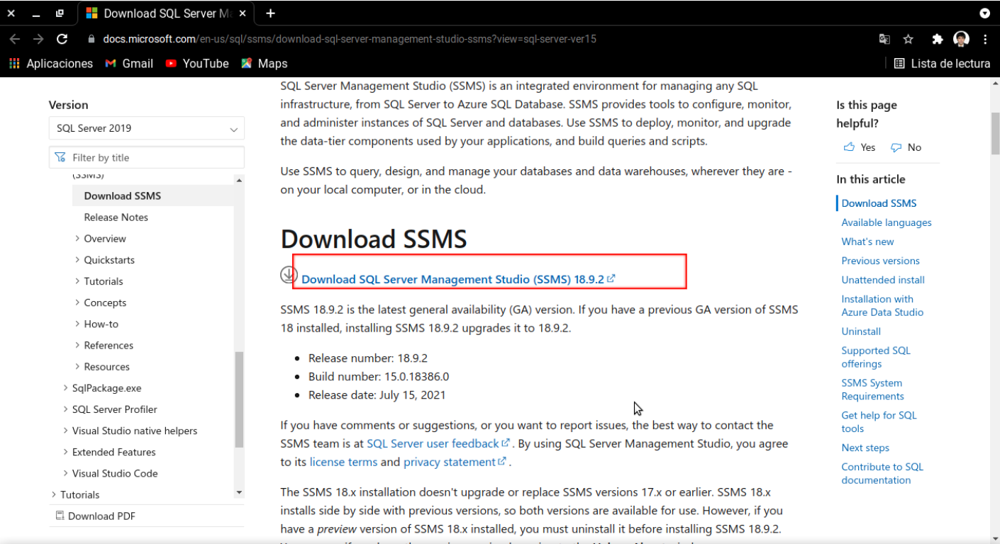
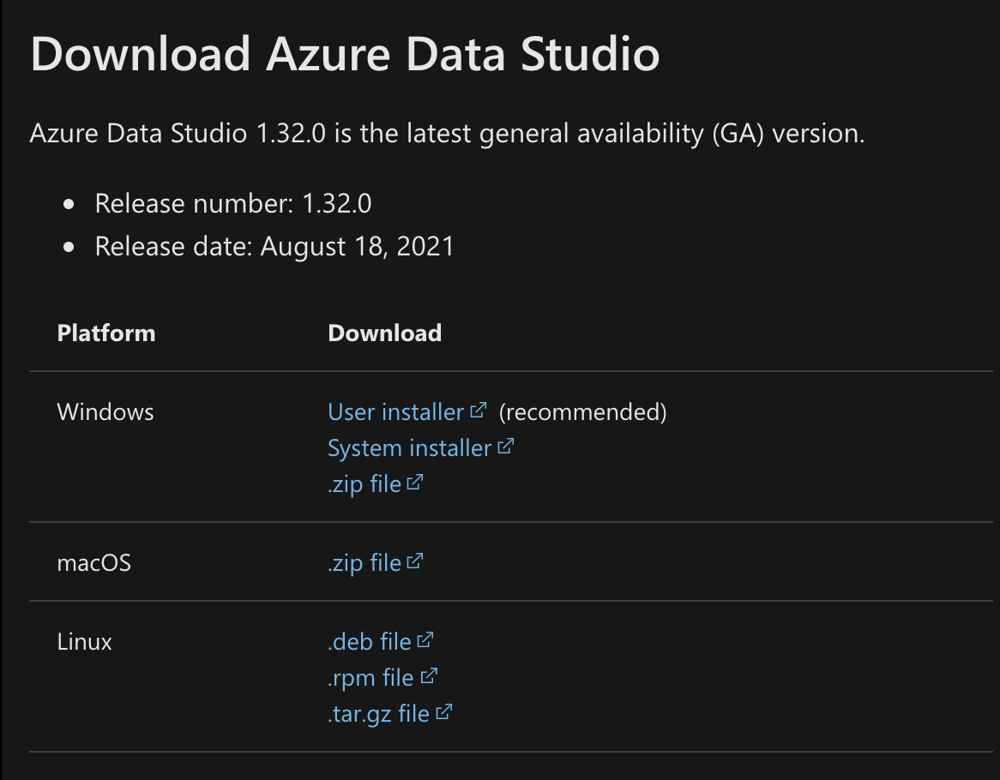

Una Base de datos es un conjunto de datos pertenecientes a un mismo contexto y almacenados metodologicamente para su uso a futuro.
Actualmente gracias al desarrollo tecnologico que se esta dando y a la gran cantidad de datos que se tienen, han surgido varias soluciones al almacenamiento de datos. Dichas soluciones se conocen formalmente como sistemas de gestion de bases de datos, o DBMS por sus siglas en inglés. Estos sistemas permiten gestionar las bases de datos, sus sub-componentes como tablas o consultas, y utilizan un lenguaje estándar de consulta llamado SQL que significa "Lenguaje estructurado de consultas (Structured Query Language)" Los principales Motores de bases que estan en el mercado son: ORACLE, MySQL, SQL Server, PostGreSQL, SQLite.
Los sistemas DBMS funcionan con un paradigma cliente-servidor, el cual es ampliamente frecuente en sistemas computacionales.
En este caso, por medio de la instalación de SQL Server lo que haremos será transformar nuestro PC local en un servidor de SQL (vale la pena repetir: local y además limitado a las capacidades de nuestro PC). Para hacer peticiones a este servidor, instalaremos un programa de gestión de base de datos que actuará como cliente; es decir, en nuestro PC tendremos el servidor y el cliente instalado a la vez.
Para este curso usaremos como servidor el SQL Server de Microsoft, y como clientes podremos usar SQL Server Management Studio (SSMS) o Azure Data Studio, los cuales procederemos a explicar su instalación en el PC local.
En la ventana anterior, presionar descargar ahora.
Se nos dá la opción de instalar SSMS inmediatamente, lo podemos hacer pulsando el botón "Install SSMS" que nos llevará a la página de descarga, y seguir de manera manual las instrucciones del próximo apartado.
Descargamos el programa desde aquí (
Link de descarga )

Se iniciará la descarga del SQL Server Management Studio (archivo de más de 600 MB) Aceptamos los términos de la licencia y procedemos a instalar.
Al presionar "Connect" ya estamos exitosamente conectados al servidor local de SQL y podremos trabajar en las actividades del curso.
Ingresamos al sitio de descarga de Azure Data Studio
Link
y
bajamos la versión correspondiente a nuestro sistema.

Abrimos el instalador y se comenzará a instalar el programa.
Aparecera una ventana emergente donde ingresaremos los
parámetros de la conexión:
A lo que respondemos:
Server=localhost / Authentication Type=Windows Authentication / Database=<default> / Server group =<default>.
Como objeto clave de una BBDD, Una tabla es un objeto que esta formado por columnas, las cuales están interrelacionadas a través de la información que contienen.
En jerga de bases de datos a una columna se le conoce como campo, mientras que una fila se le conoce como registro.
En una BBDD, las tablas tienen un nombre único. Una BBDD puede contener varias tablas, y las tablas estar relacionadas entre sí por campos que comparten, llaves (un tipo de campo que revisaremos más adelante) y relaciones de cardinalidad entre sus registros (que también veremos más adelante).
El conjunto de tablas y relaciones en una BBDD se conoce como el Esquema de una BBDD y se puede representar gráficamente en un diagrama que se conoce como diagrama Entidad-Relación (como el que se muestra a continuación)
Las bases de datos en las que se puede consultar con SQL se les conoce como bases de datos relacionales, mientras que los datos que se almacenan en ellas son datos estructurados; es decir, corresponden a un tipo bien específico de dato que caerá en las siguientes categorías:
Tipos Numéricos
Int: Número enteros, en un rango de \(-2^{31}\) a \(2^{31}\).
Bigint: Número entero entre \(-2^{63}\) y \(2^{63}\)
Bit: Para un número entero que puede ser 0 ó 1.
Float: Números decimales
Tipos de Texto/Fecha
Char: Este tipo es para cadenas de longitud fija. Su longitud va desde 1 a 255 caracteres. Siempre se ocupara el largo que hayamos dado (añadiendo espacios en el caso que faltasen caracteres).
Varchar: Para una cadena de caracteres de longitud variable de hasta 8.060.
Nvarchar: Para una cadena de caracteres de longitud variable de hasta 4000, y soporta formato Unicode.
Text: Texto de longitud variable que puede tener hasta 65.535 caracteres.
Date: Para almacenar fechas. El formato por defecto es yyyymmdd.
Datetime: Combinacion de fecha y hora.
Las declaraciones DDL o Data Definition Language corresponden a aquellas
que intervienen de alguna manera el esquema de la BBDD o manipulan
nuevos objetos adyacentes a las tablas. Las declaraciones DDL suelen
empezar con un comando CREATE en caso de que se crean objetos, ALTER
para modificarlos y DROP para borrarlos.
Por ejemplo, al crear una base de datos se puede usar un comando
CREATE como sigue:
CREATE DATABASE mi_base_de_datos
Acto seguido puedo exigirle a SQL que apunte a esa base de datos de ahora en adelante para trabajar sobre ella:
USE mi_base_de_datos
Use una declaración CREATE TABLE para especificar el diseño de su tabla:
CREATE TABLE nombre-tabla (campo1 tipo1, campo2 tipo2 ... )
ALTER TABLE cambia la estructura de una tabla. Por ejemplo, puede agregar o eliminar columnas, crear o borrar índices, cambiar el tipo de columnas existentes o cambiar el nombre de las columnas o de la tabla en sí.
ALTER TABLE nombre-tabla (campo1 tipo1, campo2 tipo2 ... )
También puede ir acompañado de borrar columnas:
ALTER TABLE t2 DROP COLUMN c, DROP COLUMN d
Para borrar una tabla, usar comando DROP TABLE. Para vaciar usar TRUNCATE TABLE:
DROP TABLE nombre-tabla
TRUNCATE TABLE nombre-tabla
Ojo: operaciones CREATE/ALTER/DROP requieren permisos de escritura
INSERT crea una fila con cada columna establecida en su valor
predeterminado
INSERT INTO tbl_name ( campos...) VALUES( valores...);
Es decir, se cargan una lista de campos determinados (que pueden ser todos) y sus valores respectivos. Un valor de un campo también se le conoce como Instancia.
Para poblar tablas desde archivos externos, los datos deben respetar las convenciones geográficas del cliente(PC) que hace la carga.
Las cadenas de texto siempre deben ir entre comillas.
Por ejemplo las fechas en SQL son en formato yyyy-mm-dd. Deben ir entre comillas como cadenas de texto.
Los números decimales separan el número con la parte decimal con un punto.
Desde SSMS se pueden importar archivos excel, planos de texto (txt) o separados por comas (csv) por medio de un asistente. Acceder a un asistente se puede utilizando el boton derecho del mouse sobre la base de datos \(\rightarrow\) Import Data o Import Flat File.
En el caso de Azure Data Studio, se puede importar instalando una extensión llamada SQL Server Import que permitirá hacer tareas similares al asistente de SSMS. Más info en https://docs.microsoft.com/en-us/sql/azure-data-studio/extensions/sql-server-import-extension?view=sql-server-ver15
La sintaxis clásica de una consulta en SQL es la siguiente (vamos a revisar sus partes en las próximas slides)
--Sintaxis consulta
SELECT campo1, campo2, ...
FROM tabla
WHERE condicion
ORDER BY campo1 ASC/DESC
--Seleccionar toda una tabla
SELECT * FROM tabla
Adicionalmente puedo copiar valores de una tabla_1 a otra tabla_2
utilizando una sintaxis combinada de INSERT y SQL:
--copia de tabla_1 a tabla_2
INSERT INTO tabla_2 SELECT * FROM tabla_1
La cláusula WHERE involucra condiciones. En general una condicion es
una proposición lógica, es decir un enunciado cuyo valor es verdadero o
falso. Siendo WHERE una instrucción en bloque (como SELECT también),
evaluará qué registros de un campo cumplen con la condición, y los
filtrará del bloque final.
--CONDICIONALES
--operadores
WHERE campo > valor -- mayor que
WHERE campo < valor --menor que
WHERE campo >= valor --mayor o igual
WHERE campo <= valor --menor o igual
WHERE campo <> valor -- distinto
WHERE campo = valor --igual
WHERE campo LIKE patron (veremos en Seccion 2)
WHERE campo IN (valor1, valor2...)--si el campo esta en un conjunto de valores
WHERE campo BETWEEN rangomin AND rangomax --si el campo esta entre rangomin y rango max
WHERE campo IS NULL -- filas en donde el campo seleccionado es null
WHERE campo IS NOT NULL --filas donde el campo no es null (vacio)
Respecto a lo anterior, entenderemos los valores NULL, como un dato
vacío que posee algún campo para un registro específico en un tabla. Es
decir, una celda donde no hay nada (ni siquiera espacios en blanco, por
lo que una celda en blanco podría no ser NULL; en general las celdas
vacías mostrarán un NULL para evitar confusiones).
Como WHERE evalúa proposiciones lógicas, sus valores de verdad pueden
ser sujeto a los operadores tradicionales lógicos (de conjunción,
disyunción, negación).
-Operadores Logicos
--operador AND
SELECT campo1, campo2, ...
FROM tabla
WHERE condicion1 AND condicion2 AND condicion3...
--operador OR
SELECT campo1, campo2, ...
FROM tabla
WHERE condicion1 OR condicion2 OR condicion3...
--operador NOT
SELECT campo1, campo2, ...
FROM tabla
WHERE NOT condicion;
Cuando usa la instrucción SELECT para consultar datos de una tabla, el
conjunto de resultados no se ordena. Significa que las filas del
conjunto de resultados pueden estar en cualquier orden.
Para ordenar el conjunto de resultados, agrega la cláusula ORDER BY a
la instrucción SELECT. A continuación se ilustra la sintaxis de la
cláusula ORDER BY:
SELECT
(lista)
FROM
tabla_nombre
WHERE ...
ORDER BY columna1 ASC columna2 DESC
Dentro de una tabla, una columna a menudo contiene muchos valores
duplicados; a veces solo desea enumerar los valores distintos. El
comando DISTINCT elimina repeticiones de una tupla de datos en una
fila.
SELECT DISTINCT columna1, columna2, ...
FROM tabla_nombre;
Como mencionamos anteriormente, el comparador LIKE se utiliza para
encontrar patrones o declarar filtros que permiten de forma eficiente
obtener sub-conjuntos de los datos. Para representar patrones que serán
utilizados en un comparador LIKE, se utilizan los siguientes
caracteres:
%: Representa cero o más caracteres
_: Representa 1 sólo caracter
[]: Representa un conjunto o intervalo de caracteres, según lo que
se especifique dentro de los corchetes.
De esta manera podemos encontrar algunos ejemplos como los siguientes:
WHERE campo LIKE 'a%' --Busca cualquier valor que comience con "a"
WHERE campo LIKE '%a' --Encuentra cualquier valor que termine con "a"
WHERE campo LIKE '%or%' --Busca cualquier valor que tenga "o" en cualquier posicion
WHERE campo LIKE '_r%' --Encuentra cualquier valor que tenga "r" en la segunda posicion
WHERE campo LIKE 'a__%' --Busca cualquier valor que comience con "a" y tenga al menos 3 caracteres de longitud
WHERE campo LIKE 'a%o' --Busca cualquier valor que comience con "a" y termine con "o"
La declaración GROUP BY agrupa las filas que tienen los mismos valores
en un campo determinado, como "encontrar el número de clientes en cada
país". La instrucción GROUP BY se utiliza a menudo con funciones de
agregado ( COUNT(), MAX(), MIN(), SUM(), AVG()) y agrupando el
conjunto de resultados de una o más columnas.
SELECT *, funcion de agregado
FROM tabla
WHERE condicion
GROUP BY *
Nota: importante que al especificar una función de agregado según un lote de campos previos, el lote de campos deberá ser escrito en GROUP BY, que es lo que se señala con * en la query anterior.
Una llave primaria (o primary key, PK) es un campo (o combinación de
campos) que identifica de manera única a cada fila en una tabla
CREATE TABLE nombre(f1 t1, f2 t2, PRIMARY KEY(campo_llave))
--alternativa
CREATE TABLE nombre(f1 t1 PRIMARY KEY, f2 t2...
La forma general de crear una tabla con un campo autoincremental es la siguiente
CREATE TABLE nombre(f1 int IDENTITY, f2 t2,...)
En el caso anterior, el campo f1 es autoincremental, y siempre es un
tipo de dato int.
Como parte de las operaciones de escritura (que deben estar debidamente autorizadas) se pueden borrar filas o actualizar filas según una condicion en particular. La sintaxis de estas operaciones es la siguiente:
--Borrar registro
DELETE FROM tabla WHERE condicion
-- Actualizar registro
UPDATE tabla SET campo1=..,campo2=..
WHERE condicion
Recomendación: trabaje con esta programación en ambientes de desarrollo, ya que puede perder datos irreversiblemente si lo hace en un ambiente de producción.
Nota: Cuando usamos comando DELETE en nuestras tablas es
necesariamente un cambio irreversible. Mientras que algunas operaciones
con UPDATE pueden ser reversibles (matemáticamente u
operacionalmente); por ejemplo, duplicar una fila con un UPDATE puede
ser deshecho con otro UPDATE que divida a la mitad.
Podemos usar la instrucción DECLARE para indicar o declarar una o más
variables. A partir de ahí, podemos utilizar el comando SET para
inicializar o asignar un valor a la variable.
DECLARE @variable tipo
SET @variable=valor
Una función definida por el usuario es una rutina que acepta parámetros, realiza una acción, como un cálculo complejo, y devuelve el resultado de esa acción como un valor.
\[inputs(x_1,x_2,\ldots)\rightarrow f(x_1,x_2,\ldots)\rightarrow output\] El valor de retorno puede ser un valor escalar (único) o una tabla. Una sintaxis para una función escalar es la siguiente:
CREATE FUNCTION nombre_funcion(par1 t1,par2 t2...)
RETURNS tipo_variable_salida
BEGIN
....
returns @variable_salida
END
Nota sobre el código anterior: en resumen, creamos una variable de salida dentro del código de la función, que va a recibir el resultado del procedimiento que ejecute la función.
La instrucción CASE pasa por condiciones y devuelve un valor cuando
ante la primera condición que se cumpla. Entonces, una vez que una de
las condiciones es verdadera, dejará de leer y devolverá el resultado.
Si no se cumple ninguna condición, devuelve el valor de la cláusula
ELSE. Una sintaxis para un CASE-WHEN es la siguiente:
SELECT campo1, campo2, ....
CASE WHEN condicion1 THEN resultado1
WHEN condicion2 THEN resultado2
...
ELSE resultadoN
END
FROM tabla
En SQL, una vista es una tabla virtual basada en el conjunto de resultados de una declaración SQL. Una vista contiene filas y columnas, como una tabla real. Los campos de una vista son campos de una o más tablas reales de la base de datos.
Puede agregar sentencias y funciones SQL a una vista y presentar los
datos como si vinieran de una sola tabla. Se crea una vista con la
instrucción CREATE VIEW. También se puede modificar una vista (con
ALTER VIEW) o eliminarla con DROP VIEW
CREATE VIEW nombre_vista AS
..query con inputs de vista
--SE PUEDE USAR ALTER/DROP
DROP VIEW nombre_vista
ALTER VIEW nombre_vista AS
...query con cambios
Notas importantes sobre las vistas: - Si se modifican los datos de una tabla, la vista alimentada por dicha tabla se actualizará automáticamente (ya que es una query almacenada que se ejecuta cuando se usa). - Puedo ver cómo está constituída una vista en SSMS, botón derecho en la vista \(\rightarrow\) opción "Design".
Una subconsulta es una consulta SQL anidada dentro de una consulta más grande. Una subconsulta puede ocurrir en:
Una cláusula SELECT
Una cláusula FROM
Una cláusula WHERE
La consulta interna se ejecuta primero antes que su consulta principal para que los resultados de una consulta interna se puedan pasar a la consulta externa.
--Sintaxis
SELECT subconsulta.columnas
FROM (SELECT columnas FROM tabla WHERE ...) as subconsulta
WHERE ....
--Subquerys en WHERE
SELECT ... FROM... WHERE campo IN (Subquery)
--Subquery en SELECT
SELECT campo=subquery FROM .... WHERE....
Observación: es importante referenciar la subconsulta y sus campos con
el comando as, ya que al requerirla después en el SELECT de afuera
debemos llamarla por sus nombres.
Permiten generar una tabla a partir de una consulta. Se le denomina tabla temporal por que queda almacenada en memoria caché (temporal) mientras la sesión está abierta o el servidor permanece corriendo; una vez cerrada la sesión o apagado el servidor, la tabla desaparece con sus datos ingestados. La sintaxis es la siguiente:
SELECT ....
INTO #tablatemporal
FROM ...
WHERE ...
Nota: usar un # para acceso local, ## para acceso global
Importante: La tabla temporal siempre quedará en una BBDD temporal
del servidor que se llama tempdb; no es un objeto que quede en la BBDD
que estamos usando.
Una clave foránea es una columna o grupo de columnas de una tabla que contiene valores que coinciden con la clave primaria de otra tabla. Las claves foráneas se utilizan para unir tablas.
Generalmente las llaves foráneas se utilizan para construir referencias en tablas de paso (es decir, tablas que consolidan registros que relacionan 2 o más tablas).
create table tabla2 (campo1 tipo1, campo2 tipo2, ...campollave REFERENCES tabla1(campollave))
Esta expresión selecciona registros que tienen valores coincidentes en ambas tablas.
SELECT columna(s)
FROM tabla1
INNER JOIN tabla2
ON tabla1.columna_pivote = tabla2.columna_pivote;
Devuelve todos los registros de la tabla izquierda (tabla1) y los registros coincidentes de la tabla derecha (tabla2). El resultado es 0 registros del lado derecho, si no hay coincidencia.
SELECT columna(s)
FROM tabla1
LEFT JOIN tabla2
ON tabla1.columna_pivote= tabla2.columna_pivote;
Devuelve todos los registros de la tabla derecha (tabla2) y los registros coincidentes de la tabla izquierda (tabla1). El resultado es 0 registros del lado izquierdo, si no hay coincidencia.
SELECT columna(s)
FROM tabla1
RIGHT JOIN tabla2
ON tabla1.columna_pivote = tabla2.columna_pivote;
Devuelve todos los registros cuando hay una coincidencia en los registros de la tabla izquierda (tabla1) o derecha (tabla2).
SELECT columna(s)
FROM tabla1
FULL JOIN tabla2
ON tabla1.columna_pivote = tabla2.columna_pivote
WHERE condicion
Con el comando UNION ALL puedo unir el resultado de una o varias consultas a mismos campos. Observación: los campos se unen incluso si están duplicados.
SELECT columna(s) FROM tabla1
UNION ALL
SELECT columna(s) FROM tabla2;
"Arriendo Seguro S.A" es una de las asociaciones encargadas de administrar el proceso de arrendar casas en Santiago. Para evitar las molestias de cobranzas para los propietarios ellos se encargan del cobro, por lo cual han diseñado el siguiente modelo de datos, con el fin de obtener toda la información necesaria y llevar el control del proceso.
Cree las tablas e ingrese datos acordes a cada una de ellas (ver anexos)
Qué Casas están en la comuna de Macul
Muestre cantidad adeudada por cada arrendatario
Muestre a los arrendatarios con deuda mayor a 100000
Cantidad de casas por comunas
Deudas por dueño
Ordenar 6) por deuda de mayor a menor
Tabla Arrendatario:
INSERT INTO arrendatario
VALUES ('11246890-4','Emilio','Gaete')
INSERT INTO arrendatario
VALUES ('9654789-k','Sulema','Garrido')
INSERT INTO arrendatario
VALUES ('5345678-8','Marcos','Urrutia')
INSERT INTO arrendatario
VALUES ('5432345-6','Tamara','Romero')
INSERT INTO arrendatario
VALUES ('1243235-8','Liliana','Sotela')
INSERT INTO arrendatario
VALUES ('6789765-0','Francisco','Rodriguez')
INSERT INTO arrendatario
VALUES ('7987657-9','Carla','Matus')
INSERT INTO arrendatario
VALUES ('12349840-4','Melissa','Torres')
Select * FROM Arrendatario
Tabla Arrienda:
INSERT INTO arrienda
VALUES ('11246890-4','1', 20000 ,'13678567-9')
INSERT INTO arrienda
VALUES ('9654789-k','2', 34000 ,'12567298-5')
INSERT INTO arrienda
VALUES ('5345678-8','3',123000, '11876984-2')
INSERT INTO arrienda
VALUES ('5432345-6','4',0,'8765432-1')
INSERT INTO arrienda
VALUES ('1243235-8','5',320000,'8647299-k')
INSERT INTO arrienda
VALUES ('6789765-0','6',87000,'10234567-5')
INSERT INTO arrienda
VALUES ('7987657-9','7',0,'6783456-7')
INSERT INTO arrienda
VALUES ('12349840-4','8',100000,'7890987-3')
INSERT INTO arrienda
VALUES ('11246890-4','9',145000,'13678567-9')
INSERT INTO arrienda
VALUES ('9654789-k','10',67000,'12567298-5')
INSERT INTO arrienda
VALUES ('9654789-k','11',0,'8765432-1')
INSERT INTO arrienda
VALUES ('1243235-8','12',187000,'8647299-k')
SELECT * FROM arrienda
Tabla Casa:
INSERT INTO casa
VALUES (1,'13678567-9','2243','Las Torres', 'Macul')
INSERT INTO casa
VALUES (2,'12567298-5','123','Guillermo Mann', 'Nunoa')
INSERT INTO casa
VALUES (3,'11876984-2','5467','P.de Valdivia', 'Nunoa')
INSERT INTO casa
VALUES (4,'8765432-1','7485', 'Los Olmos', 'Macul')
INSERT INTO casa
VALUES (5,'8647299-k','0876', 'Los Platanos', 'Quilicura')
INSERT INTO casa
VALUES (6,'10234567-5','5546', 'Los Espinos', 'San Ramon')
INSERT INTO casa
VALUES (7,'6783456-7','6657', 'Zañartu', 'Recoleta')
INSERT INTO casa
VALUES (8,'7890987-3','4059', 'Los Alerces', 'Maipu')
INSERT INTO casa
VALUES (9,'13678567-9','0987','Av.Grecia', 'Macul' )
INSERT INTO casa
VALUES (10,'12567298-5','7657','Los Trucados', 'Nunoa')
INSERT INTO casa
VALUES (11,'8765432-1','778', 'Almirante la Torre', 'Maipu')
INSERT INTO casa
VALUES (12,'8647299-k','7854', 'Irarrazaval', 'Nunoa')
INSERT INTO casa
VALUES (13,'6783456-7','4444', 'Marathon', 'Peñaflor')
INSERT INTO casa
VALUES (14,'7890987-3','3335', 'Manuel de Salas', 'Santiago')
SELECT * FROM casa
Tabla Dueño:
INSERT INTO dueno
VALUES ('13678567-9','Carlos','Gutty')
INSERT INTO dueno
VALUES ('12567298-5','Cristian','fuentes')
INSERT INTO dueno
VALUES ('11876984-2','Maria','Mercedes')
INSERT INTO dueno
VALUES ('8765432-1','Gloria','Sura')
INSERT INTO dueno
VALUES ('8647299-k','Patricio','Rojas')
INSERT INTO dueno
VALUES ('10234567-5','Leonardo','Opazo')
INSERT INTO dueno
VALUES ('6783456-7','Silvia','Hernandez')
INSERT INTO dueno
VALUES ('7890987-3','Eduardo','Lizama')
SELECT * FROM dueno
Comentar que al montar el esquema se debe hacer en orden de
dependencias (de menor a mayor); por ejemplo la tabla casa depende
de 1 tabla (ver diagrama ERD), mientras que arrienda depende de 2
tablas, y arrendatario/dueno dependen de 0 tablas. De esta manera, se
crean arrendatario/dueno primero, luego casa y finalmente
arrienda:
-- El orden SI IMPORTA!
CREATE TABLE Arrendatario (Rut_A varchar(10) PRIMARY KEY,
Nombre varchar(20),
Apellido varchar(20))
CREATE TABLE dueno (Rut_D varchar(10) PRIMARY KEY,
Nombre varchar(20),
Apellido varchar(20))
CREATE TABLE casa (Id_Casa int PRIMARY KEY,
Rut_D varchar(10) REFERENCES dueno(RUT_D),
Numero int,
Calle varchar(20),
Comuna varchar(20))
CREATE TABLE Arrienda (Rut_A varchar(10) REFERENCES Arrendatario(Rut_A),
Id_Casa int REFERENCES casa(Id_Casa),
Deuda int,
Rut_D varchar(10) REFERENCES dueno(Rut_D))
La ingesta de datos debe hacerse en el mismo orden.
Como vimos en la sección anterior, una función puede tener un output escalar (valor único) o vectorial (entrega como resultado una tabla). A este último tipo se le conoce como función tabular.
La sintaxis para crear una función tabular es similar a lo revisado en clases anteriores, solo que como resultado se obtiene una tabla:
CREATE FUNCTION nombre_funcion (@param1 tipo1 ..)
RETURNS TABLE
AS
RETURN
(...codigo para generar tabla...)
Además, podemos crear una tabla que sea definida en una función, y que
por ende usará más comandos que un SELECT, sino también
INSERT, DELETE, UPDATE, etc. A este tipo de bloques se les denomina
funciones multisentencia:
CREATE FUNCTION nombre_funcion (@param1 tipo1 ....)
RETURNS @tabla_retorna table(campos a retornar )
AS BEGIN
INSERT INTO @tabla retorna
SELECT ...
RETURN
END
Un Trigger o desencadenador es un tipo de procedimiento almacenado que
se ejecuta automáticamente cuando se produce un evento de Lenguaje de
Manipulación de Datos (DML), o sea cuando se ejecuta un
INSERT, UPDATE o DELETE en una tabla o un evento de Lenguaje de
Definición de Datos (DDL) por ejemplo un DROP TABLE.
Un gatillo se activa cuando ocurre un evento, por ende es condicionado a que el evento ocurra. El gatillo se puede activarse antes o después de que el evento ocurra, aunque para nivel intermedio de SQL consideramos gatillos con activación posterior a la ocurrencia del evento.
Para crear un Trigger, usar la siguiente sintaxis:
CREATE TRIGGER nombre_trigger
ON tabla_inicial FOR tipo_evento
AS
BEGIN
...
END
En este caso el tipo de evento puede ser un DML o DDL, para los DML
seria INSERT/UPDATE/DELETE. El evento que activa el gatillo entregará
un objeto inserted/updated/deleted que corresponderá a una tabla
resultante o que recibe la acción: por ejemplo, si quiero gatillar una
acción a partir de una inserción realizada, puedo obtener sus
características llamando al objeto inserted.
Los triggers pueden ser modificados con ALTER TRIGGER y eliminados con
DROP TRIGGER.
Una ventaja importante de SQL es que no sólo es un lenguaje de consulta, sino también un lenguaje de programación: podemos crear programas que se ejecutan línea por línea, pueden iterar, agregar condicionales, etc.
En SQL Server podemos imponer condiciones sobre la ejecución de una
instrucción SQL. La instrucción SQL que sigue a una palabra clave IF y
su condición se ejecuta si se cumple la condición. La palabra clave
ELSE opcional introduce otra instrucción SQL que se ejecuta cuando no
se cumple la condición IF:
IF <condicion>
BEGIN
Ejecucion ...
END
ELSE
BEGIN
Ejecucion ...
END
Así mismo podemos almacenar conjuntos de instrucciones y ejecutarlas cuando queramos. Esto se puede hacer por medio de un Procedimiento Almacenado: si tiene una consulta SQL que escribe una y otra vez o tareas de DML, guárdela como un procedimiento almacenado y luego llámela para ejecutarla.
También se pueden pasar parámetros a un procedimiento almacenado, como una función (y recalcamos "como", ya que un procedimiento no exige retornar valores):
--sintaxis
CREATE PROCEDURE nombre_procedimiento (@param1 tipo1 ,
@param2 tipo2 ...)
AS
BEGIN
...
END
--ejecute el procedimiento
EXEC nombre_procedimiento
Una introducción a los objetos iterativos en programación en SQL son los cursores. El cursor es un objeto de base de datos para recuperar datos de un conjunto de resultados una fila a la vez, en lugar de los comandos vistos hasta ahora que operan en todas las filas del conjunto de resultados a la vez. En consecuencia, el cursor es el unico objeto que recorre una consulta línea por línea.
DECLARE nombre_cursor CURSOR
FOR especificacion_consulta
--activar_cursor
OPEN nombre_cursor
--recorrer fila por fila
FETCH NEXT FROM nombre:cursor INTO variables_cursor
WHILE @@FETCH_STATUS = 0
BEGIN
...
FETCH NEXT FROM nombre:cursor INTO variables_cursor
END
CLOSE nombre_cursor --cierra cursor
DEALLOCATE nombre_cursor -- desposicionar
Una carga de archivo plano con separadores puede hacerse usando el
asistente (en SSMS) pero también por medio de instrucciones en SQL. Para
ello utilizamos el comando BULK INSERT
BULK INSERT tabla_receptora
FROM 'ruta_archivo'
WITH(FIELDTERMINATOR='sep_columnas',
ROWTERMINATOR='sep_filas',
FIRSTROW='fila_de_partida')
Algunos detalles importantes de ésta instruccion:
Generalmente el FIELDTERMINATOR son comas, mientras que el
ROWTERMINATOR es un salto de línea (representado por \n).
BULK INSERT como instrucción carga los datos en el formato que
están en el archivo de origen; por ende, debemos preocuparnos de que
los datos vengan en el formato correcto y consistente con la tabla
donde se hara la ingesta. Si los datos no vienen en un formato
consistente con la tabla, pueden en primer lugar cargarse en una
tabla temporal como texto (sólo campos varchar(max)) y luego
utilizar funciones de conversion (tema a revisar sección 5)
La función CONVERT () convierte un valor (de cualquier tipo) en un tipo de datos específico.
CONVERT(tipodato, dato)
-- sintaxis alternativa
CAST(valor AS tipo_datos)
Además de los comandos case-when, existe una sintaxis simple para un if dentro de un campo determinado, para esto se usa el comando IIF
IF(condicion, valor_if_true, valor_if_false)
Una forma astuta de reemplazar el siguiente case-when
case when var=x then 'a'
when var=y then 'b'
else 'c'
end
Es la siguiente:
iif(var=x,'a',iif(var=y,'b','c'))
Es decir podemos anidar para aprovechar la sintaxis resumida de la
instruccion iif.
Existen una gran cantidad de funciones para operar con texto en SQL, que están ampliamente documentadas. Aquí mencionaremos las más importantes:
CHARINDEX(): La función CHARINDEX() busca una subcadena en una
cadena y devuelve la posición CHARINDEX(substring, string, start)
CONCAT: La función CONCAT() agrega dos o más cadenas juntas.
CONCAT(string1, string2, ...., string_n)
LEFT/RIGHT: La función LEFT ()/RIGHT () extrae varios caracteres
de una cadena (empezando por la izquierda/derecha).
LEFT/RIGHT(string, no_caracteres)
LTRIM/RTRIM elimina los espacios iniciales de una cadena.
LTRIM/RTRIM(string)
REPLACE: reemplaza todas las apariciones de una subcadena dentro
de una cadena, con una nueva subcadena.
REPLACE(string, vieja_subcadena, nueva_subcadena)
STUFF: elimina una parte de una cadena y luego inserta otra parte
en la cadena, comenzando en una posición especificada.
STUFF(string, partida, largo, nuevo_string)
LOWER/UPPER : lleva todo a minúsculas o mayúsculas respectivamente
SUBSTRING: La función extrae algunos caracteres de una cadena.
SUBSTRING(string, partida, largo)
Análogamente, entre las funciones de fecha a destacar tenemos:
CURRENT_TIMESTAMP entrega la fecha y hora actual
DATEDIFF(unidad, fecha1, fecha2) entrega la diferencia entre 2
fechas en la unidad especificada (por ejemplo 'd' días, 'm' meses,
'yy' años, 'ww' semanas, etc.)
DATEADD(unidad, cantidad, fecha) agrega a la fecha una cantidad de
unidades de fecha (análogo a anterior)
EOMONTH(fecha,meses_agregar), entrega la fecha de fin de mes para
una cantidad de meses atras (-) o adelante (+); si quiere el fin del
mes actual, meses_agregar=0
DAY(),MONTH(),YEAR() obtiene día, mes, y año de una fecha en
particular.
ISDATE() permite verificar si un texto es fecha o no.
@@DATEFIRST es una constante del sistema que define cual es el
primer día de la semana.
DATEPART(unidad,fecha) entrega una parte de la fecha según
definición. Por ejemplo para saber qué día de la semana es, colocar
'dw'
Se puede ejecutar una instruccion SQL a partir de una cadena de texto que esté parametrizada
EXEC ('Instruccion como cadena de texto')
NOTA: esto habilita para crear instrucciones dinámicas que puedan usar funciones de texto.
Lo anterior puede usarse para hacer subrutinas que recorran toda la
BBDD. Para obtener información de la BBDD que estamos usando, podemos
consultar al INFORMATION_SCHEMA
--obtiene tablas
SELECT * FROM nombre_bbdd.INFORMATION_SCHEMA.TABLES
--obtiene tablas y sus columnas
SELECT * FROM nombre_bbdd.INFORMATION_SCHEMA.COLUMNS
--Contar numero de tablas en bbdd
SELECT COUNT(TABLE_NAME) FROM nombre_bbdd.INFORMATION_SCHEMA.TABLES
Como sabemos, el instrumento de excelencia para operar con tablas
dinámicas es MsExcel. Sin embargo, cuando los volumenes de datos superan
el orden de \(10^7\) registros, una tabla dinámica en excel comenzará a
ponerse lenta e inmanejable. Para esto existe la función PIVOT que
emula las funciones de excel mencionadas:
SELECT <columna_no_pivote>,
<lista_columnas_a_pivotear>
FROM
(<SELECT query que produce datos>)
AS <nombre_alias>
PIVOT
(
<funcion de agregado>(<columna agregado>)
FOR
[<campo desde el cual sale lista_columnas_a_pivotear>]
IN ( [ <lista_columnas_a_pivotear> ] )
) AS <alias_pivot>
El archivo series_precios.csv contiene los precios diarios de 5 indices ampliamente utilizados en el mercado financiero. En el se incluyen además los días no hábiles, en cuyo caso se repite el precio de cierre del último día hábil disponible. Respecto a este archivo:
Construya una tabla temporal #fechas que tenga la fecha de fin de mes anterior (fecha inicio) y la fecha de fin de mes (fecha término) para todos los meses que dispone la data.
Construya una consulta que entregue el retorno mensual de una de las series (por ejemplo, serie1), donde sus campos sean la fecha de término del mes y el retorno, el cual calcularemos usando la expresión \(Retorno=100*\left(\frac{Precio Final-Precio Inicial}{Precio Inicial}\right)\)
Utilice la consulta realizada en (3) para construir una consulta dinámica donde al cambiar el nombre de la serie, se obtenga una tabla de retornos.
Elabore una consulta que obtenga el máximo retorno para una serie, y en qué mes se da.
Elabore una consulta para obtener el segundo mayor retorno (sólo el retorno, sin fecha)
Para la serie1 de precios, elaborar un flag(o campo binario) donde valga 1 si el día es hábil y 0 si no
Calcular el promedio para los días hábiles (sólo serie de precios)
Elabore un control que permita detectar si hay precios duplicados.